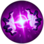
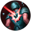
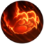
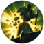
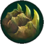

Invocar a Aery
____________________
PASIVA: Dañar a un campeón enemigo le indica a Aery que se lance hacia ellos, causando 10 − 40 (según el nivel) (+ 15% DA adicional) (+ 10% PH) de Daño adaptable. curar, escudar o mejorar a un aliado le indica a Aery que se lance hacia ellos, protegiéndolos por 35 − 80 (según el nivel) (+ 40% DA adicional) (+ 25% PH) durante 2 segundos.
Aery permanece en el objetivo durante 2 segundos antes de volar de regreso a ti, y no puede ser enviado de nuevo hasta que ella regrese. Al principio, Aery es muy lenta, pero gradualmente acelera, y puede recogerse moviéndose cerca de ella.
DAÑO ADAPTABLE: Inflige daño físico o daño mágico dependiendo en tus estadísticas adicionales, prefijando en daño físico.
Cometa Arcano
____________________
PASIVA: Dañar a un campeón enemigo con una habilidad lanza un Cometa Arcano a su ubicación actual, infligiendo 30 − 100 (según el nivel) (+ 35% DA adicional) (+ 20% PH) de Daño adaptable después de un breve retraso.
Dañar a los campeones enemigos con una habilidad reduce el tiempo de enfriamiento restante.
Objetivo único: 20%
Área de efecto / Multi-golpe : 10% por enemigo golpeado
Daño prolongado: 5%
DAÑO ADAPTABLE: Inflige daño físico o daño mágico dependiendo en tus estadísticas adicionales, prefijando en daño físico.
Enfriamiento 20 − 8 (según el nivel) segundos
Irrupción de Fase
____________________
PASIVA: Los ataques básicos y las habilidades generan acumulaciones en campeones enemigos golpeados, hasta uno por ataque o lanzamiento. La aplicación de 3 acumulaciones a un objetivo dentro de un período de 4 segundos te otorga 30% − 60% (según el nivel) de velocidad de movimiento y 75% de resistencia a la ralentización durante 3 segundos
La velocidad de movimiento adicional de los campeones a distancia se reduce a 15% − 40% (según el nivel).
Enfriamiento 30 − 10 (según el nivel) segundos
Orbe Anulador
____________________
PASIVA: Si recibieras daño mágico que te reduciría por debajo del 30% de tu vida máxima, primero obtienes un escudo que absorbe 40 − 120 (según el nivel) (+ 15% DA adicional) (+ 10% PH) de daño mágico durante 4 segundos.
Enfriamiento 60 (al activarse) segundos
Banda de maná
____________________
PASIVA: Golpear a un campeón enemigo con una habilidad aumenta permanentemente tu maná máximo por 25, hasta 250 de maná.
Después de alcanzar la bonificación de 250 de maná, restauras permanentemente 1% de tu maná máximo cada 5 segundos.
Enfriamiento 15 segundos
Capa del Nimbo
____________________
PASIVA: Lanzar un hechizo de invocador otorga Ghost.png fantasmal y 5 / 20 / 35% de velocidad de movimiento adicional durante 2 segundos.
Trascendencia
____________________
PASIVA: Ganas bonificaciones al alcanzar los siguientes niveles:
Nivel 5: +5 aceleración de habilidad.
Nivel 8: +5 aceleración de habilidad.
Nivel 11: Los derribos de campeones reducen los tiempos de enfriamiento restantes de tus habilidades básicas en un 20%.
Celeridad
____________________
PASIVA: Las bonificaciones de velocidad de movimiento son un 7% más efectivas para ti.
Además, ganas un 1% de velocidad de movimiento adicional.

Concentración absoluta
____________________
PASIVA: Ganas 1.8 − 18 (según el nivel) DA adicional o 3 − 30 (según el nivel) PH (adaptable) mientras estés por encima del 70% de tu vida máxima.
ADAPTABLE: Otorga bonificaciones en función de las estadísticas para las que ya tienes más bonificaciones.
Piroláser
____________________
PASIVA: Tu siguiente golpe de habilidad prende fuego a los campeones. causando 15 − 35 (según el nivel) de daño mágico adicional después de 1 segundo.
Enfriamiento 10 segundos
Caminar sobre agua
____________________
PASIVA: Mientras estés en el río, ganas 25 de velocidad de movimiento adicional y 3 − 18 (según el nivel) DA adicional o 5 − 30 (según el nivel) PH (adaptable).
ADAPTABLE: Otorga bonificaciones en función de las estadísticas para las que ya tienes más bonificaciones.
Tormenta creciente
____________________
PASIVA: Aumenta la Fuerza adaptable cada 10 minutos lo que otorga un total de 0 − ∞ (según el minutos) de daño de ataque adicional o 0 − ∞ (según el minutos) de poder de habilidad (Adaptable).
ADAPTABLE: Otorga bonificaciones en función de las estadísticas para las que ya tienes más bonificaciones.
Dominación
Electrocutar
____________________
PASIVA: Los ataques básicos y las habilidades generan acumulaciones al impactar campeones enemigos, hasta uno por ataque o lanzamiento. La aplicación de 3 acumulaciones a un objetivo dentro de un período de 3 segundos hace que sea golpeado por un rayo, causando 30 − 180 (según el nivel) (+ 40% DA adicional) (+ 25% PH) de Daño adaptable.
DAÑO ADAPTABLE: Inflige daño físico o daño mágico dependiendo en tus estadísticas adicionales, prefijando en daño físico.
Enfriamiento 25 − 20 (según el nivel) segundos
Depredador
____________________
PASIVA: Las botas obtienen el efecto activo DEPREDADOR.
ACTIVA - DEPREDADOR: Después de 0.25 segundos de canalización, obtienes velocidad de movimiento adicional durante 10 segundos, aumentando hasta un 45% durante 1.5 segundos, mientras se mueve hacia campeones enemigos (alcance de 3000, incluye campeones enemigos fuera de la vista).
Después de aumentar, tu próximo ataque o habilidad de daño contra un campeón enemigo inflige 40 − 120 (según el nivel) (+ 20% DA adicional) (+ 10% PH) de Daño adaptable adicional después de 0.25 segundos de retraso y finaliza el efecto.
DAÑO ADAPTABLE: Inflige daño físico o daño mágico dependiendo en tus estadísticas adicionales, prefijando en daño físico.
Enfriamiento 90 − 60 (según el nivel) segundos
Alcance 3000
Cosecha Oscura
____________________
PASIVA: Dañar a un campeón por debajo del 50% de su vida máxima inflige 20 − 60 (según el nivel) (+ 5 por Alma (+ 25% DA adicional) (+ 15% PH) adicional de Daño adaptable y cosecha 1 Alma. Esto no puede volver a suceder durante 45 segundos, reiniciando a 1.5 segundos al derribar un campeón.
Cuando no está en tiempo de enfriamiento, el Alma también se toma al obtener el crédito de la muerte de un campeón asesinado por Minion icon.png súbditos, torretas o monstruos.
Enfriamiento 45 segundos
Lluvia de cuchillas
____________________
PASIVA: Atacar a un campeón enemigo activa Lluvia de Espadas, con 2 acumulaciones restantes.
Mientras Lluvia de espadas está activa, obtienes 110% de velocidad de ataque adicional y tu límite de velocidad de ataque aumenta temporalmente. Lluvia de Espadas dura 3 segundos, pero su duración se actualiza al atacar a los campeones enemigos hasta que se consumen todas las acumulaciones.
Se consume 1 acumulación por ataque básico y se gana 1 acumulación cada vez que se lanza una habilidad que restablezca el temporizador de ataque básico.
Enfriamiento 8 segundos

Golpe bajo
____________________
PASIVA: Los ataques básicos y las habilidades dañinas infligen 10 − 45 (según el nivel) de daño verdadero adicional a campeones enemigos ralentizados o inmovilizados.
Nótese que los ataques o habilidades que dañan al objetivo no activarán ese daño adicional, a menos que el objetivo ya esté afectado.
Sabor a sangre
____________________
PASIVA: Dañar a un campeón enemigo te cura por 18 − 35 (según el nivel) (+ 20% DA adicional) (+ 10% PH).
No se activa a plena vida.
Enfriamiento 20 segundos
Impacto repentino
____________________
PASIVA: Entrar en combate afectando a un campeón enemigo a los 3 segundos de usar un deslizamiento, parpadeo o Teleportación, o salir de invisibilidad o camuflaje, otorga 7 de letalidad (4.36 − 7 (según el nivel) de penetración de armadura) y 6 de penetración de magia durante los siguientes 5 segundos.
Guardián zombi
____________________
Al derribar un centinela enemigo, se invoca a un Centinela Zombi aliado en su lugar (temporizador de asistencia de 10 segundos). Si la maleza en el que mataste al centinela enemigo ya contiene un centinela aliado, en lugar de eso, obtienes un Centinela Zombi en tu Ranura de Baratijas que se puede colocar en cualquier lugar dentro de los siguientes 30 segundos.
Obtienes 1.2 DA adicional o 2 PH (adaptable) por cada Centinela Zombi generado, hasta 10, para un máximo de 12 DA adicional o 20 PH (adaptable).
Los Centinelas Zombi otorgan visión en 1100 unidades, son visibles para el equipo enemigo, tienen 1 de vida, duran 120 segundos y no cuentan para tu límite de centinelas.
Matar a un Centinela Zombi otorgará 1.
Poro Fantasmal
____________________
PASIVA: Cuando tus centinelas expiran, dejan un Poro Fantasma que otorga visión sobre un área de 450 unidades durante 60 segundos. Los centinelas muertos por los enemigos no generan Poros Fantasma.
Los campeones enemigos cercanos asustan al Poro Fantasma.
Ganas 1.2 DA adicional o 2 PH (adaptable) por cada Poro Fantasma generado, hasta 10, para un máximo de 12 DA adicional o 20 PH (adaptable). Después de generar 10 poros, adicionalmente ganas 6 DA adicional o 10 PH (adaptable).
ADAPTABLE: Otorga bonificaciones en la estadística en la que ya tienes la mayor cantidad de bonificaciones.
Colección de globos oculares
____________________
PASIVA: Coleccionas 1 Ojo por campeón derribado, hasta 10.
Obtienes 1.2 DA adicional o 2 PH (adaptable) por Ojo recolectado, hasta 12 DA adicional o 20 PH (adaptable). Completar tu colección otorga 6 DA adicional o 10 PH (adaptable) adicional.
ADAPTABLE: Otorga bonificaciones en función de las estadísticas para las que ya tienes más bonificaciones. Valores predeterminados a los primeros listados.
Cazador voraz
____________________
Ganas +1.5% de omnivampirismo por acumulación de Cazarrecompensas, hasta un 7.5% con 5 acumulaciones.
Ganas una acumulación de Cazarrecompensas por derribo de campeón, hasta uno por cada campeón enemigo único.
Cazador ingenioso
____________________
PASIVA: Obtienes 10 (+5 por acumulación de Cazarrecompensas) de aceleración de objetos, hasta 35 con 5 acumulaciones.
Ganas una acumulación de Cazarrecompensas por derribo de campeón, hasta uno por cada campeón enemigo único.

Cazador incesante
____________________
PASIVA: Ganas 5 (+8 por acumulación de Cazarrecompensas) de velocidad de movimiento fuera de combate, hasta 45 en 5 acumulaciones.
Ganas una acumulación de Cazarrecompensas por derribo de campeón, hasta uno por cada campeón enemigo único.
Cazador definitivo
____________________
Obtienes 6 (+5 por acumulación de "Cazarrecompensas") de aceleración máxima, hasta 31 con 5 acumulaciones.
Gana una acumulación de Cazarrecompensas por derribo de Campeón, hasta uno por cada Campeón enemigo único.
Valor
Garras del inmortal
____________________
PASIVA: Causar o recibir daño en 2 segundos genera una acumulación cada segundo. En 4 acumulaciones, tu próximo ataque básico en 6 segundos, contra un campeón enemigo inflige 4% de tu vida máxima como daño mágico adicional, restaura 2% 4% de tu vida máxima, y permanentemente otorga 5 de vida adicional. La duración del ataque mejorado se actualiza cada vez que inflige o recibe daño.
en campeones a distancia, Los efectos se reducen en un 40%, hasta 2.4% de tu vida máxima, 1.2% de tu vida máxima, y 3 de vida adicional respectivamente.
Reverberación
____________________
PASIVA: Inmovilizar un campeón enemigo otorga 35 (+ 80% armadura adicional) de armadura adicional y 35 (+ 80% resistencia mágica adicional) de resistencia mágica adicional por 2.5 segundos. Las resistencias adicionales están limitadas a 80 − 150 (según el nivel).
Después de la duración, se libera una onda de choque que causa 25 − 120 (según el nivel) (+ 8% de tu vida máxima) de daño mágico a los campeones enemigos cercanos y monstruos.
Enfriamiento 20 segundos
Protector
____________________
PASIVA: Mientras te encuentres dentro de 350 unidades de un campeón aliado, levantas tu Guardia. Campeones aliados a los que afectas con habilidades de objetivo único también son Protegidos por 3 segundos, irrelevante de la distancia.
Si tú o un aliado Protegido reciben 90 − 250 (según el nivel) de daño dentro de 2.5 segundos o daño letal de un campeón, monstruo o torreta enemigos, ambos obtendrán un escudo por 70 − 150 (según el nivel) (+ 15% PH del Guardián) (+ 9% de la vida adicional del Guardián) por 2 segundos.
Guardián solo entra en tiempo de enfriamiento cuando se activa el escudo.
Enfriamiento 70 − 40 (según el nivel) segundos

Demoler
____________________
PASIVA: Generas acumulaciones en estructuras enemigas dentro de 600 unidades, hasta 6 después de 3 segundos. Tu siguiente ataque contra una estructura con 6 acumulaciones causa 100 (+ 35% de tu vida máxima) de Attack damage.png daño físico adicional. Demolición solo entrará en tiempo de enfriamiento cuando se active el daño.
Las acumulaciones decaen lentamente si te mueves fuera de alcance.
Enfriamiento 45 segundos
Alcance 600
Fuente de vida
____________________
PASIVA: ralentizar o inmovilizar un campeón enemigo los marca durante 4 segundos.
Los campeones aliados (excluyéndote a ti) que ataquen a los enemigos marcados se curan por 5 (+ 1% de tu vida máxima) durante 1.75 segundos.
Golpe de escudo
____________________
PASIVA: Mientras estés escudado, ganas 1 − 10 (según el nivel) de armadura adicional y resistencia mágica adicional.
Cada vez que ganas un escudo, tu próximo ataque básico contra un campeón inflige 5 − 30 (según el nivel) (+ 1.5% de la vida adicional) (+ 8.5% de la cantidad del escudo) como daño adaptable adicional. El ataque mejorado dura hasta 2 segundos después de que expire el escudo.
DAÑO ADAPTABLE: Inflige daño físico o daño mágico dependiendo en tus estadísticas adicionales, prefijando en daño físico.
Condicionamiento
____________________
PASIVA: después de 12 minutos, obtienes 9 de armadura adicional y 9 de resistencia mágica adicional y aumenta tu armadura y tu resistencia mágica total un 5%.
Fuerzas renovadas
____________________
PASIVA: Después de recibir daño de un campeón enemigo, ganas regeneración de vida igual a 6 (+ 4% de tu vida faltante) durante 10 segundos.

Revestimiento de huesos
____________________
PASIVA: Ganas 10% de resistencia a la ralentización y tenacidad. Esto aumenta en función de tu vida faltante, hasta un 30% de resistencia a la ralentización y tenacidad en 30% de vida máxima o inferior.
Sobrecrecimiento
____________________
PASIVA: Cada 8 monstruos o súbditos enemigos que mueran cerca de ti obtienes permanentemente. 3 de vida adicional.
Después de ganar 15 acumulaciones (120 monstruos o súbditos), obtienes un adicional de 3.5% de vida adicional.
Alcance 1400
Revitalizar
____________________
PASIVA: Otorga 5% de curación y Hybrid resistances poder de escudo.
La curación saliente y el Hybrid resistances escudo saliente aumentan un 10% en comparación con los objetivos por debajo del 40% de vida.
La curación entrante, el Hybrid resistances escudo entrante, la autocuración y la Hybrid resistances autoprotección aumentan un 10%, mientras que tú estés por debajo del 40% de vida.
Inquebrantable
____________________
PASIVA: Después de recibir daño de un campeón enemigo, durante 3 segundos, los siguientes tres hechizos o ataques recibidos del mismo campeón enemigo infligen 15 − 40 (según el nivel) menos de daño.
Enfriamiento 45 segundos
Inspiración
Aumento Glacial
____________________
PASIVA – AUMENTO GLACIAL: Los ataques basicos ralentizan a los campeones enemigos durante 2 segundos, lo que aumenta con la duración. Este efecto no puede ocurrir en el mismo objetivo más de una vez cada pocos segundos.
·Campeones cuerpo a cuerpo: 45% − 55% (según el nivel) de ralentización máxima.
·Campeones a distancia: 30% − 40% (según el nivel) de ralentización máxima.
PASIVA – RAYO FRÍO: ralentizar un campeón enemigo con un objeto activo crea una línea congelada de 600 unidades en su dirección durante 5 segundos, ralentizando en un 60% a todos los enemigos dentro. El Rayo Frío puede dispararse a cualquier cantidad de campeones al mismo tiempo, y no tiene tiempo de enfriamiento.
Enfriamiento 7 / 6 / 5 / 4 (por objetivo) segundos
Libro de hechizos
____________________
PASIVA: Mientras no se use Teleportación y estés fuera de combate durante 5 segundos, intercambia uno de tus hechizos de invocador equipados por un nuevo hechizo de invocador de un solo uso. No puedes seleccionar un hechizo de invocador que ya hayas equipado.
Tu primer intercambio estará disponible en la marca de 6 minutos, con un tiempo de enfriamiento inicial de 300 segundos. La selección de un hechizo de invocador reduce el tiempo de enfriamiento del intercambio en 25 segundos, hasta una vez por hechizo de invocador único. Debes cambiar a 3 hechizos de invocador diferentes antes de volver a uno que ya hayas usado.
Seleccionar un hechizo de invocador lo pone en un tiempo de enfriamiento de 5 segundos.
El uso de un hechizo de invocador seleccionado pone al hechizo de invocador en la misma ranura en un tiempo de enfriamiento de 10 segundos.
Enfriamiento 300 − 150 (según el intercambios únicos) segundos
Prototipo: Versatilidad
____________________
PASIVA: Periódicamente otorga un solo uso de otra runa clave aleatoria. 7 − 3 (según el nivel) segundo enfriamiento entre usar una runa clave y ganar la siguiente (11 − 7 (según el nivel) segundos para campeones a distancia). Después de 40 segundos de no usar una runa clave dada, se otorga otra runa clave aleatoria mientras está fuera de combate. Entrar en la fuente volverá a cambiar la runa clave actual.
Incluye:
Estrategia Ofensiva, Cadencia Letal, Sobre la Marcha, Conquistador
Invocación: Aery, Cometa Arcano, Fase Veloz
Electrocutar, Depredador, Cosecha Oscura, Lluvia de Espadas
Depredador solo está disponible para campeones que ya han comprado botas.
La bonificación de almas de Cosecha Oscura afectarán a todas las runas clave.
Aliento del Agónico, Réplica, Aumento Glacial
Réplica solo está disponible para campeones que han aprendido una habilidad básica que pueda activarla.
Las runas clave se ciclan de forma semi aleatoria; una runa clave no se repite durante 5 ciclos después de haber sido utilizada.
Hextello
____________________
PASIVA: Mientras Destello está en tiempo de enfriamiento, es reemplazado por Hextello.
PRIMER LANZAMIENTO: Comienzas a canalizar, incrementando el alcance de Hextello en los siguientes 2.5 segundos. Después de al menos 1 segundo, puedes reactivar la habilidad. Si sueltas el botón antes de 1 segundo o entras en combate con un campeón, Hextello se pondrá en tiempo de enfriamiento durante 10 segundos.
SEGUNDO LANZAMIENTO: parpadeas a la ubicación de destino dentro del alcance.
Enfriamiento 20 segundos
Alcance 200 − 400 (según el tiempo de canalización)
Calzado mágico
____________________
PASIVA: A los 12 minutos (reducido en 45 segundos por derribo), ganas Botas Ligeramente Mágicas gratis. Las Botas Ligeramente Mágicas son idénticas y se pueden actualizar como si fueran Botas. Si el inventario está lleno mientras se reciben las botas, aparecerán tan pronto como se libere un lugar en el inventario.
Además, tus botas ganan 10 de velocidad de movimiento adicional adicional de forma pasiva.
Sin embargo, las Botas están deshabilitadas y no puedes comprar botas de nivel 2 antes de obtener las Botas Ligeramente Mágicas.
Momento Oportuno
____________________
PASIVA: Recibes un Cronómetro Réplica a los 14 minutos (reducido en 2 minutos por derribos). El Cronómetro Réplica es idéntico al, excepto que solo contribuye con un valor de 250.
Mercado del futuro
____________________
PASIVA: Puedes entrar en deuda para comprar objetos, hasta 145 (+ 5 por minuto), que se muestra como oro negativo en tu tesorería.
se agrega una comisión de 50 a la cantidad de dinero que debes después de salir de la tienda.
No puedes pedir dinero prestado antes del minuto 2:00.
Desmaterializador de súbditos
____________________
PASIVA: Comienzas el juego con 3 Desmaterializadores de Súbditos, Que se puede activar para ejecutar al Súbdito cuerpo a cuerpo, Súbdito lanzador o Súbdito de asedio objetivo. Los Desmaterializadores comienzan el juego en un tiempo de enfriamiento de 240 segundos.
Además del oro por muerte y experiencia por la muerte, también ganas un 4% más de daño contra ese tipo de súbdito durante el resto del juego. Los Desmaterializadores más allá del primer uso en el mismo tipo de súbdito aumentan esta bonificación en un 1%, hasta un máximo del 9% si los seis se usan en el mismo tipo de súbdito
Enfriamiento 10 segundos
Alcance 550
Entrega de galletas
____________________
PASIVA: Recibes una Galleta de la Voluntad Eterna en los minutos 2:00, 4:00 y 6:00. Si el inventario está lleno mientras recibes una galleta, la(s) galleta(s) aparecerán tan pronto como se libere un lugar en el inventario.
Consumir una Galleta otorgará instantáneamente 50 de maná aumentará de forma permanente tu maná máximo en 50, además de sus efectos. También obtendrás el aumento de maná si vendes la Galleta por 30.
Perspicacia cósmica
____________________
PASIVA: Obtienes 18 de aceleración de hechizos de invocador y 10 de aceleración de objeto.
Velocidad de acercamiento
____________________
PASIVA: Ganas 7.5% de velocidad de movimiento adicional cuando te mueves hacia campeones enemigos con movimiento impedido dentro de un alcance de 1000. Esta bonificación se duplica a 15% y no tiene un límite de alcance hacia los campeones enemigos cuyo movimiento hayas impedido.
CONTROL DE MASAS VÁLIDO:
·En el aire
·Acción forzada
·Enraizamiento
·Ralentización
·Sueño
·Estasis
·Aturdimiento (Stun icon.png Suspensión)
·Supresión
Tónico de distorsión temporal
____________________
PASIVA: Consumir una poción o galleta restaura inmediatamente el 50% de la vida y maná (si corresponde) que recuperaría. La vida/maná por instancia se reduce a la mitad durante la duración regular del efecto. Si los consumibles se acumulan, la restauración instantánea se aplica después de que finaliza la duración del consumible inicial.
Además, ganas un 5% de velocidad de movimiento adicional mientras estés bajo el efecto de una poción o una galleta.
Precisión
Ataque intensificado
____________________
PASIVA: Los ataques básicos contra campeones enemigos aplican acumulaciones durante 4 segundos. Atacar a un nuevo objetivo elimina todas las acumulaciones del objetivo anterior. Aplicar 3 acumulaciones a un objetivo inflige 40 − 180 (según el nivel) de Daño adaptable adicional y lo deja Vulnerable durante 6 segundos, haciendo que reciba un 8% − 12% (según el nivel) de daño aumentado de todas las fuentes subsiguientes (excepto del daño verdadero).
Enfriamiento 6 segundos
Compás letal
____________________
PASIVA: 1.5 segundos después de dañar a un campeón enemigo, obtienes un 40% − 110% (según el nivel) de velocidad de ataque adicional además de poder ignorar el límite de velocidad de ataque durante 3 segundos. Atacar a un campeón mientras el efecto está activo extenderá la duración a 6 segundos.
Enfriamiento 6 segundos
Pies veloces
____________________
PASIVA – GOLPE ENERGIZADO: Moverse y atacar genera acumulaciones de Energizar hasta un máximo de 100.
SOBRE LA MARCHA: Al estar completamente Kircheis Energizado tu siguiente ataque básico restaura 3 − 60 (según el nivel) (+ 30% DA adicional) (+ 20% PH) de vida y otorga un 20% de velocidad de movimiento adicional durante 1 segundo. Con campeones a distancia la curación contra súbditos sólo es un 20% efectiva.
Conquistador
____________________
PASIVA: los ataques básicos al impacto contra campeones enemigos otorgan (2 / 1) acumulaciones de Conquistador. Las habilidades y hechizos que infligen daño a un campeón enemigo siempre otorgan 2 acumulaciones.
Cada acumulación de Conquistador otorga 1.02 − 2.52 (según el nivel) DA adicional o 1.7 − 4.2 (según el nivel) PH (adaptable) durante 6 segundos, acumulándose hasta 12 veces, para un máximo de 14.4 − 36 (según el nivel) DA adicional o 24 − 60 (según el nivel) PH (adaptable). Cuando están completamente acumulados, los campeones se curan por (9% / 6%) del daño de posmitigación infligido a los campeones enemigos. Las mejoras se actualizan al infligir daño a campeones enemigos con ataques o habilidades.
Los efectos de daño prolongado y las fuentes de daño en curso otorgarán una acumulación/actualización solo una vez cada 5 segundos. Las habilidades y efectos que infligen daño predeterminado no otorgarán acumulaciones.
Supercuración
____________________
PASIVA: Convierte 20% − 100% (según el nivel) del curación en exceso de tu vida máxima en un escudo por una cantidad de hasta 10 (+ 10% de vida máxima).
Después de 6 segundos, el escudo decae en 2.5% de su valor máximo cada segundo. Recibir curación, infligir o recibir daño actualizará la duración del escudo a 6 segundos.
Triunfo
____________________
PASIVA: los derribos de campeones, después de un retraso de 1 segundo, restauran 12% de vida faltante y otorgan 20 adicional.
Claridad mental
____________________
PASIVA: Los derribos de campeones, tras 1 segundo de retraso restauran un 15% de maná faltante o 15% de energía máxima
Dañar a un campeón enemigo aumenta tu regeneración de maná en 1.5 − 11 (según el nivel) maná por segundo, reducido a 80% de efectividad para campeones a distancia, por 4 segundos. Al activar este efecto, los usuarios de energía regeneran 1.5 de energía por segundo.
Leyenda: Presteza
____________________
PASIVA: Otorga un 3% (+ 1.5% por cada acumulación de Leyenda) de velocidad de ataque adicional hasta un 18% con 10 acumulaciones.
LEYENDA: Otorga acumulaciones de Leyenda por cada 100 puntos obtenidos hasta un máximo de 10:
·100 puntos por derribos de campeones
·100 puntos por derribos de monstruos épicos
·25 puntos por muertes de monstruos grandes
·4 punto por cada muerte de súbditos
Leyenda: Tenacidad
____________________
PASIVA: Otorga un 5% (+ 2.5% por cada acumulación de Leyenda) de tenacidad hasta un 30% con 10 acumulaciones.
LEYENDA: Otorga acumulaciones de Leyenda por cada 20 puntos obtenidos hasta un máximo de 10:
·100 puntos por Damage derribos de campeones
·100 puntos por Damage derribos de monstruos épicos
·25 puntos por muertes de monstruos grandes
·4 punto por cada muerte de súbditos
Leyenda: Linaje
____________________
PASIVA: Otorga un 0.6% de robo de vida por cada acumulación de Leyenda hasta un 9% con 15 acumulaciones.
LEYENDA: Otorga acumulaciones de Leyenda por cada 100 puntos obtenidos hasta un máximo de 15:
·100 puntos por derribos de campeones
·100 puntos por derribos de monstruos épicos
·25 puntos por asesinatos contra monstruos grandes
·4 punto por cada asesinato contra súbditos
Golpe de Gracia
____________________
PASIVA: Inflige un 8% más de daño a los campeones por debajo del 40% de vida máxima.
Derribado
____________________
PASIVA: Inflige entre un 5% y un 15% más de daño a los campeones, según cuánta vida máxima tengan más que tú. El daño adicional aumenta linealmente contra los enemigos con 10% a 100% más de vida máxima que tú.
Último esfuerzo
____________________
PASIVA: Inflige un 5% más de daño a los campeones mientras estés por debajo del 60% de vida máxima. Esto aumenta en función de tu vida faltante hasta un 11% más de daño mientras estés por debajo del 30% de vida máxima.